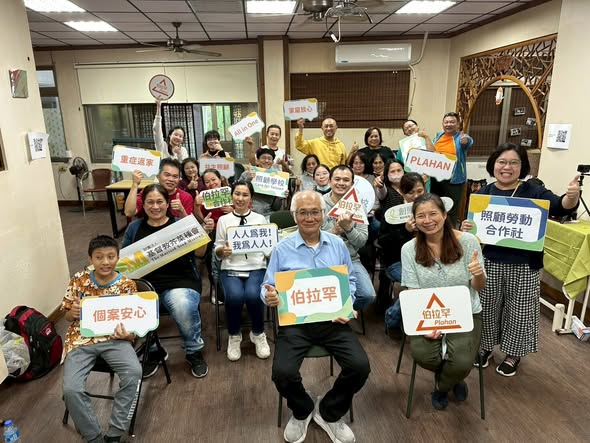

#2 舒適照顧
舒適真功夫：打造有溫度的照顧力
江青純 · 講師

每一堂都是「現場走得通」的內容 ── 講師多為一線照顧資深工作者，課堂從理論進入實作，再走進共生之家現場。
查看全部 17 門 →江青純 · 講師
郭健中 · 講師
江青純 · 講師
林依瑩 · 創辦人 · 講師
CFT 講師大多來自照顧現場 ── 不老騎士推手、共生之家管家、在宅醫師、跨專業設計師。他們不是「教過」，是「正在做」。
創照服務設計創辦人、前台中市副市長。從伯拉罕到鄰里123，把共生之家從一個概念，做成全台 5 處正在運作的家。
30 年一線照顧資歷。把「零抬舉」「身體力學」「有溫度的觸覺」這些抽象詞，拆解成可重複練習的肌肉記憶。
肌少症與防跌實務專家。「跌倒」不是運氣，是可預防的鏈條 ── 在課堂上把每一個環節拆開來看。
完整一年的學習地圖 ── 從入門到進階、從台中到嘉義、從教室到現場，一次看完。
CFT 為照顧人才設計的不是片段技能，是一整套可長期走的路徑。八大模組從「人本照顧」起手，向上長成設計師、教練、在宅醫師。
「以前覺得自己只是『照服員』，做這 30 年好像沒什麼了不起。 上 CFT 的人本照顧導論第一堂，我突然懂了 ── 我每天碰到的，是別人最脆弱的時刻。 這份工作不只是工作，是專業。」
陳秀珍 · AIO 照顧服務員 · 2024 第三屆結業